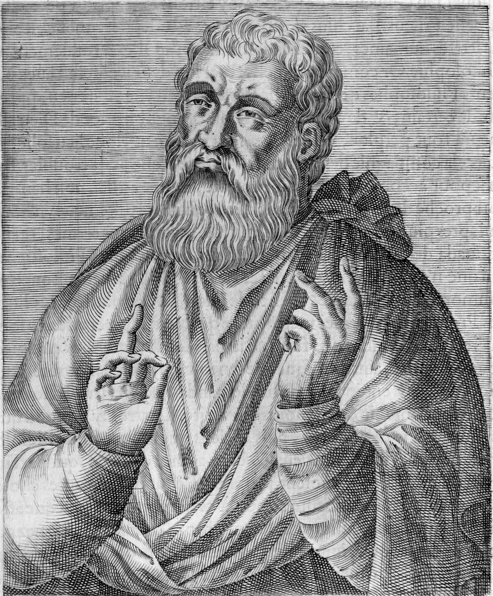
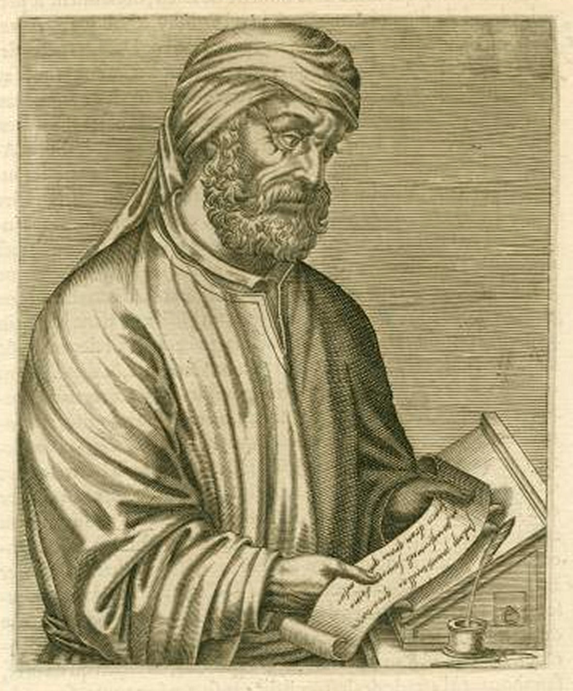
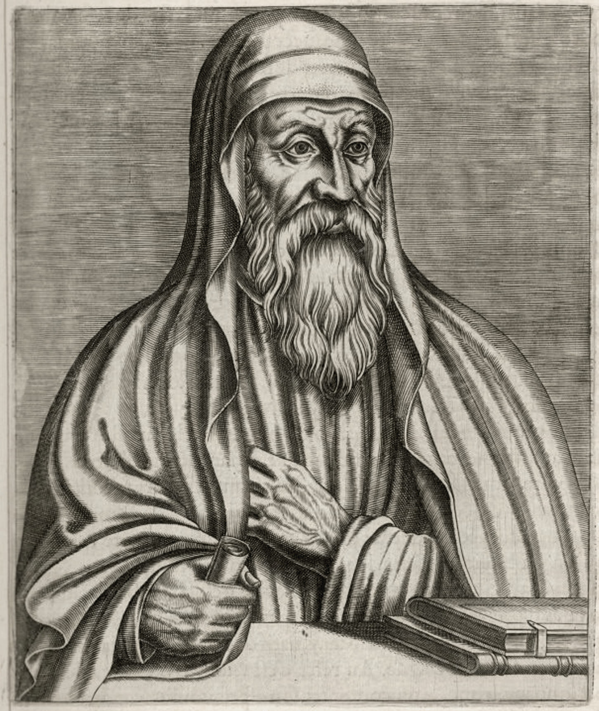
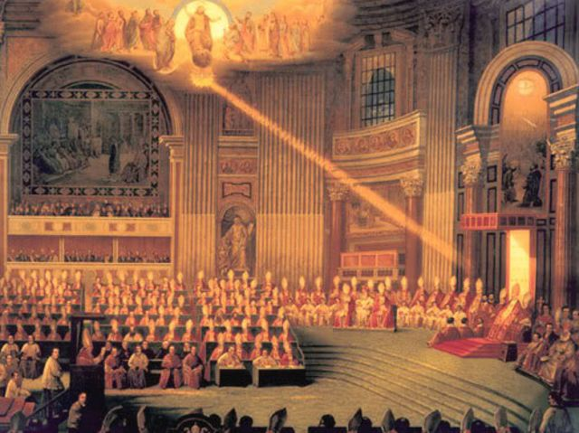

El Catecismo de la Iglesia Católica enseña, en el párrafo 366, que toda alma espiritual es creada inmediatamente por Dios y que es inmortal. Es una de las frases más citadas del documento. Lo que casi nadie mira es la nota al pie.
La nota remite a tres textos. Uno es la encíclica Humani generis de Pío XII, de 1950. Otro es una profesión de fe de Pablo VI. Y el tercero, el que sostiene específicamente la inmortalidad, es este: «Concilio Letrán V (1513): DS 1440».
El magisterio contemporáneo ancla la inmortalidad del alma en un decreto de 1513. No lo decimos nosotros: está en la nota. Y esa fecha, tan tardía, es la puerta de entrada a la historia de esta entrega — que no es la historia de una creencia, sino la de una definición, y las dos cosas no coinciden.

Los Padres que no creían que el alma fuera inmortal por naturaleza
Conviene empezar por donde más incomoda, y sin exagerar nada, porque el material se sostiene solo.
Justino Mártir, en el Diálogo con Trifón, hace decir al anciano que lo instruye antes de su conversión que el alma no debe llamarse inmortal, y el argumento es estrictamente metafísico: si es inmortal, es ingénita; si es ingénita, es divina. Y la formulación positiva es la que vale: el alma «no vive porque sea vida, sino porque participa de la vida»; y no participará «cuando Dios no quiera que viva».
Aquí hay que poner una cautela inmediata, porque esta cita se usa mucho y se usa mal. La tesis está en boca de un personaje literario, no del propio Justino; y Justino afirma en otros lugares el castigo eterno consciente de los impíos. La pregunta bien planteada no es «¿creía Justino en el alma inmortal?», sino «¿inmortal por naturaleza o inmortal por don?». Y a esa pregunta el texto responde sin ambigüedad: por don.
Taciano es más explícito, y en su caso no hay personaje interpuesto: «el alma no es en sí misma inmortal, griegos, sino mortal. Y sin embargo le es posible no morir». Si no conoce la verdad, se disuelve con el cuerpo y vuelve a levantarse al final con él. Nótese que Taciano no elimina el castigo: lo traslada a después de la resurrección.
Ireneo dice que las almas perduran «conforme a la voluntad de Dios», y que solo Dios es sin principio y sin fin. Y añade un detalle que casi nunca se cita: atribuye al alma separada la figura del cuerpo al que estuvo unida, y memoria de lo que hizo.
Tertuliano, que sostiene que el alma es un cuerpo

Y luego está Tertuliano, que es donde la distancia con el vocabulario moderno se vuelve vertiginosa. Para el teólogo latino más influyente antes de Agustín, el alma es un cuerpo —corpus sui generis— y tiene forma: la forma del cuerpo humano que la contiene.
No es una excentricidad aislada, y de ahí sale su traducianismo: si el alma es corpórea, se transmite de padres a hijos como se transmite todo lo corpóreo. Es una posición coherente, razonada, y es incompatible con lo que la Iglesia definirá mil trescientos años después.
Aquí hay que desactivar dos trampas a la vez. La primera es la de quien cita a Tertuliano para decir que «los primeros cristianos eran materialistas»: Tertuliano es estoico en su física, no materialista en el sentido moderno, y su alma corpórea es inmortal. La segunda es la de quien lo esconde por incómodo. Lo que el expediente muestra no es que los Padres negaran el alma: es que no tenían una doctrina común sobre qué era, y eso es un dato histórico, no una munición.
El caso de Orígenes, y el concilio que no lo condenó

Orígenes sostuvo la preexistencia de las almas y la restauración final de todos los seres racionales. La tradición posterior tuvo que expulsar las dos cosas, y la expulsión se cuenta casi siempre mal.
La frase que circula es que «el concilio ecuménico de 553 condenó la preexistencia del alma». En el mejor de los casos es un atajo.
El Segundo Concilio de Constantinopla se celebró entre el 5 de mayo y el 2 de junio de 553, convocado por Justiniano, y su objeto declarado fue la controversia de los Tres Capítulos. Promulgó catorce anatematismos. En la convocatoria no hay nada sobre Orígenes.
Los quince anatemas contra Orígenes que todo el mundo cita no forman parte de sus actas. La edición estándar de los decretos conciliares, la de Norman Tanner de 1990, los excluye con una nota editorial explícita: «no incluimos el texto de los anatemas contra Orígenes, puesto que estudios recientes han mostrado que no pueden atribuirse a este concilio». Vienen de otra parte: del edicto de Justiniano y del sínodo local de 543, y de un conjunto suscrito por los obispos reunidos en Constantinopla probablemente antes de la apertura formal del concilio — lo que explica que las actas no registren ningún debate sobre origenismo.
Lo único que los actos oficiales dicen de Orígenes es su nombre, en una lista de herejes cristológicos, sin doctrina asociada y fuera de orden cronológico. Y desde Franz Diekamp, en 1899, hay una corriente académica sustancial que considera ese nombre añadido ex post facto.
Pero no demos la interpolación por establecida, porque hay una objeción metodológica seria y hay que recogerla. Michael McClymond se la opone a Ilaria Ramelli en estos términos: si la interpolación se añadió tan pronto que nadie la reconoció como tal en su momento, ¿cómo se la reconoce mil quinientos años después?
Y una distinción que confunden los dos bandos: que la condena no tenga sello ecuménico no la hizo inoperante. El origenismo quedó proscrito, los monjes origenistas fueron expulsados de Palestina y la preexistencia desapareció como opción viva. Una cosa es la eficacia histórica, que es indiscutible, y otra el estatuto canónico, que es discutido.
La cadena de citas que sostiene «el concilio ecuménico de 553 condenó la preexistencia del alma» suele remontar a la edición de Koetschau de Orígenes, que incorporó al texto del propio Orígenes esos mismos anatemas. Es decir: se lee en Orígenes lo que sus condenadores dijeron de él, y luego se usa como prueba de lo que Orígenes decía.
La formulación que sí se sostiene es esta. La única condena antigua explícita de la preexistencia del alma no figura en los anatematismos oficiales del V Concilio Ecuménico; procede del edicto de Justiniano, del sínodo local de 543 y de un conjunto de quince anatemas que la edición crítica estándar excluye expresamente. Y hay una nota al margen que merece la pena, de Antoine Guillaumont: buena parte de lo condenado en 553 es en rigor evagriano —de Evagrio Póntico— y no origeniano. Casi nadie lo menciona.
Agustín declara que no lo sabe
En el año 415, y durante los veinticinco años siguientes, Agustín enumera una y otra vez cuatro hipótesis sobre el origen del alma —¿viene de los padres?, ¿la crea Dios en cada concepción?, ¿preexiste y es enviada?, ¿preexiste y desciende por su voluntad?— y declara que no sabe cuál es verdadera. No es una reticencia retórica: lo repite en las Retractationes, al final de su obra, revisando lo que había escrito.
Y aquí está el ángulo que esta entrega aporta sobre lo que ya contamos en la serie del pecado original, y que invierte la causalidad habitual. Se suele decir que Agustín no pudo resolver la transmisión del pecado original. Lo cierto es más preciso: no pudo resolverla porque no pudo resolver el origen del alma, que es la cuestión lógicamente previa.
Piénsese. Si Dios crea cada alma directamente en la concepción, ¿cómo llega esa alma ya manchada por un pecado que no cometió, sin hacer a Dios autor de la mancha? Y si el alma viene de los padres, ¿es entonces corpórea, como quería Tertuliano? El pecado original tiene un agujero en los cimientos, y el agujero es este.
Cuatro preguntas, y cuándo se cierra cada una
Los cuatro círculos de la derecha son cuatro preguntas sobre el alma, y viajan de fila en fila. Lo interesante no es cuándo se encienden: es cuántas filas pasan con los dos últimos apagados. Pulsa cualquier fila.
Tomás, y la factura del aristotelismo
La síntesis que la Iglesia acabará adoptando es la de Tomás de Aquino: el alma es forma sustancial del cuerpo, subsistente e incorpórea. Con ella se gana mucho — sobre todo, una explicación de por qué el ser humano es uno y no dos cosas pegadas.
Pero tiene un precio, y Tomás lo asume con una honestidad que casi nadie cita. En la cuestión 89 de la primera parte de la Summa sostiene que el alma separada no es una persona, y que conoce de un modo imperfecto y antinatural, porque le falta justamente aquello para lo que está hecha. Si el alma es la forma de un cuerpo, un alma sin cuerpo es un ser incompleto.
Esa factura se paga en 1336, y merece la pena ver cómo.
Un papa contra su antecesor
La secuencia conciliar sobre el alma empieza en Lyon II, el 6 de julio de 1274, con la profesión de fe suscrita por Miguel VIII Paleólogo: las almas libres de pecado son recibidas enseguida en el cielo, las de quienes mueren en pecado mortal van enseguida al infierno, y hay purificación tras la muerte. Precisión de crítica de fuentes, porque es de las que el blog no se salta: ese texto no lo redactó el concilio. Lo redactó Clemente IV en 1267; en Lyon II se leyó y se suscribió.
Sigue el concilio de Vienne, en 1311-1312, que define la relación: el alma racional es «por sí y esencialmente forma del cuerpo humano», y quien sostenga lo contrario «ha de ser considerado hereje». Tres cautelas otra vez: Pedro Juan Olivi no es nombrado en el decreto y había muerto trece años antes; la proposición condenada es una versión endurecida de lo que él sostenía; y las actas del concilio se han perdido salvo un fragmento. Además, los decretos no se publicaron entonces: los promulgó Juan XXII en 1317.
Y llegamos a Benedictus Deus, del 29 de enero de 1336, que es donde está el dato de oro de toda esta historia.
Benedicto XII define que las almas plenamente purificadas ven la esencia divina «con visión intuitiva y cara a cara», enseguida después de la muerte, antes de recuperar sus cuerpos y antes del juicio general.
¿Por qué hizo falta definir eso? Porque su propio antecesor había sostenido lo contrario. Juan XXII predicó públicamente, hacia 1331-1334, que los bienaventurados no gozan de la visión plena hasta el juicio final. Benedictus Deus es la clausura de esa crisis.
La doctrina del alma separada no bajó del cielo: se decidió en una disputa, y en la disputa un papa le enmendó la plana a otro.
Las almas sin pecado, mox in caelum; las que mueren en pecado mortal, al infierno; purificación intermedia. Nada sobre qué son.
El alma racional es «por sí y esencialmente forma del cuerpo humano». Se define la relación. Nada sobre la inmortalidad ni sobre la multiplicidad.
Visión intuitiva de la esencia divina, antes de recuperar los cuerpos. Se define un alma separada plenamente operativa sin haber definido nunca que el alma sea inmortal.
Purificación post mortem; las almas sin mancha «son recibidas inmediatamente en el cielo». Tercera definición sobre el destino. Ninguna sobre la naturaleza.
Inmortal. Y multiplicada, una por cada cuerpo. Con anatema. Doscientos treinta y nueve años después de la primera definición sobre su destino.
Y repárese en lo que esa definición implica. Definir que un sujeto separado ejerce el acto cognitivo más alto concebible —la visión de la esencia divina— equivale a definir que ese sujeto existe, que es numéricamente el mismo que el difunto, y que es sujeto de premio y de pena. Se está definiendo un alma inmortal, individual y plenamente operativa sin haber definido nunca que el alma sea inmortal.
La escatología va ciento setenta y siete años por delante de la antropología. Y de paso, la visión facial que Benedictus Deus atribuye al alma separada choca de frente con la cuestión 89 de Tomás, que le negaba a esa misma alma el conocimiento pleno. Los tomistas resuelven la tensión distinguiendo lo natural de lo sobrenatural — pero la tensión existe, y está exactamente en el punto donde el aristotelismo paga su factura.
19 de diciembre de 1513


Letrán V, sesión VIII. Bula Apostolici regiminis. El alma no solo es forma del cuerpo, dice el decreto, «sino que además es inmortal; y más aún, para el enorme número de cuerpos en que se infunde individualmente, puede y debe ser y es multiplicada». Y condena expresamente a quienes sostienen que el alma intelectiva es mortal, o que es una sola en todos los seres humanos.
Tres cosas se definen ahí, y solo una es la que se suele citar.
La primera es la inmortalidad, que pasa de presupuesto operativo a proposición definida con anatema. La segunda es la multiplicidad numérica —una alma por cuerpo—, que es la tesis realmente nueva, que nadie había definido nunca, y que apunta directamente al averroísmo padovano: al intelecto único de Ibn Rushd.
Y la tercera es la que convierte 1513 en un acontecimiento de la historia de la universidad y no solo de la teología: se define que ninguna afirmación contraria a la verdad de la fe puede ser verdadera, y se obliga a los profesores de filosofía a refutar ante sus alumnos las tesis contrarias. Según una lectura académica influyente, la de Eric Constant, el blanco inmediato del decreto no era ni siquiera la tesis mortalista, sino la llamada doctrina de la doble verdad: la posición de que la filosofía puede concluir lo contrario de la fe sin que haya conflicto.
Dos datos que devuelven la escena a escala humana. Cayetano —Tommaso de Vio, el teólogo dominico más importante del momento— votó en contra de la parte disciplinar del decreto, sin éxito. Y Pietro Pomponazzi publicó su Tractatus de immortalitate animae en Bolonia en 1516, tres años después: le quemaron el libro públicamente en Venecia, le llovieron refutaciones, y nunca fue procesado ni abjuró, protegido por el cardenal Bembo.
Lo que es consenso en esta entrega: las fechas y los textos de los decretos, que son verificables uno a uno en la edición de Tanner; que Vienne define la forma y no la inmortalidad; que Benedictus Deus define la visión intuitiva antes de la resurrección de los cuerpos; que Letrán V añade la inmortalidad y la multiplicidad numérica con anatema; y que el Catecismo actual remite a 1513 en la nota del §366.
Lo que está en debate abierto: el estatuto de los quince anatemas contra Orígenes, donde la tesis de la interpolación tiene apoyo sustancial desde Diekamp (1899) pero no puede darse por establecida, por la objeción metodológica de McClymond; y cuál era el blanco real de Apostolici regiminis, donde Eric Constant sostiene que fue la doctrina de la doble verdad más que la tesis mortalista.
Una cautela sobre las atribuciones patrísticas. El pasaje de Justino está en boca de un personaje literario y su interpretación se discute: hay quien lee inmortalidad condicional o donada y quien lo toma por una etapa de su itinerario, no su doctrina madura. No hay consenso. Lo que el texto sí dice sin discusión es que la vida del alma es participada y no propia, y eso es lo que se afirma aquí. Con Taciano no hace falta cautela: lo dice él, en primera persona y sin personaje interpuesto.
Y lo que esta entrega no hace: usar la fecha de 1513 como argumento contra la creencia. Que una doctrina se defina tarde no dice nada sobre si es verdadera. Lo que la cronología documenta es cómo se formó una definición, no si lo definido existe — y confundir las dos cosas tiene nombre propio, que daremos en la entrega siguiente.
Lo que 1513 significa y lo que no
Y ahora la parte que separa este artículo de la versión polémica de la misma historia, porque la versión polémica existe y es mala.
No es cierto que la Iglesia no creyera en la inmortalidad del alma hasta 1513. La había presupuesto en cada definición sobre el destino de los difuntos desde 1274, la escolástica la consideraba demostrada, y era doctrina universalmente enseñada. Quien use la fecha de 1513 para insinuar que la creencia se inventó entonces está haciendo trampa.
Lo que ocurre en 1513 es otra cosa, y formularlo bien cuesta una frase entera: la Iglesia no empieza a creer en el alma inmortal — deja de poder no creerlo. La tesis pasa de doctrina común a proposición definida, con anatema y con una obligación disciplinar para quien enseñe filosofía.
Añádase un detalle que remata el cuadro: Trento no definió nada sobre la naturaleza del alma. El concilio que todo el mundo asocia con la definición doctrinal católica se ocupó de la justificación, de los sacramentos y del purgatorio. No hacía falta volver sobre el alma: ya estaba cerrada treinta y dos años antes.
Y la última pregunta de Agustín —de dónde viene el alma— no se cierra hasta 1950, y no en un concilio, sino en Humani generis, una encíclica cuyo asunto era el evolucionismo. El alma espiritual es creada inmediatamente por Dios; el traducianismo de Tertuliano queda fuera. Mil quinientos treinta y cinco años después de que Agustín declarase no saberlo, y por la puerta lateral.
Fuentes
Los textos conciliares se citan por Norman P. Tanner (ed.), Decrees of the Ecumenical Councils, Georgetown University Press / Sheed & Ward, 1990, con la numeración de Denzinger-Schönmetzer entre paréntesis: Lyon II, DS 851-861 · Vienne, Fidei catholicae fundamento, DS 902 · Benedictus Deus, DS 1000-1002 · Florencia, Laetentur caeli, DS 1304-1306 · Letrán V, Apostolici regiminis, DS 1440-1441.
Patrística. Justino, Diálogo con Trifón 5-6 · Taciano, Discurso a los griegos 13 · Ireneo, Adversus Haereses II 34 · Teófilo de Antioquía, Ad Autolycum II 27 · Tertuliano, De anima.
Sobre el concilio de 553. Richard Price, The Acts of the Council of Constantinople of 553, 2 vols., Translated Texts for Historians 51, Liverpool University Press, 2009 · Franz Diekamp, Die origenistischen Streitigkeiten im sechsten Jahrhundert und das fünfte allgemeine Concil, Münster, 1899 · Antoine Guillaumont, Les «Kephalaia Gnostica» d'Évagre le Pontique, París, 1962 · Daniël Hombergen, The Second Origenist Controversy, Studia Anselmiana 132, Roma, 2001 · Ilaria Ramelli, s.v. «Constantinople, Second Council of», Brill Encyclopedia of Early Christianity.
Sobre Letrán V. Eric A. Constant, «A Reinterpretation of the Fifth Lateran Council Decree Apostolici regiminis (1513)», The Sixteenth Century Journal 33/2 (2002) 353-379 · Christoph Sander, «In dubio pro fide», Educazione. Giornale di pedagogia critica (2014) · Craig Martin, s.v. «Pietro Pomponazzi», Stanford Encyclopedia of Philosophy · Robert Pasnau, s.v. «Peter John Olivi», SEP.
Magisterio contemporáneo. Pío XII, Humani generis, 1950, DS 3896 · Catecismo de la Iglesia Católica, §§365-367, con sus notas.